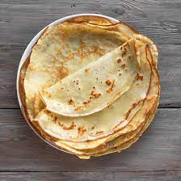

Recette de Crêpes
Les crêpes sont un délicieux plat traditionnel français. Voici comment préparer de délicieuses crêpes maison.

Ingrédients
- 250 g de farine
- 2 œufs
- 500 ml de lait
- 1 pincée de sel
- 2 cuillères à soupe de sucre
- 2 cuillères à soupe de beurre fondu
- 1 cuillère à café d'extrait de vanille (facultatif)
Instructions
- Dans un grand bol, tamisez la farine et ajoutez le sel et le sucre. Mélangez bien.
- Au centre du mélange de farine, faites un puits et cassez-y les œufs. Battez les œufs à l'aide d'une fourchette.
- Versez le lait petit à petit tout en continuant de mélanger jusqu'à obtenir une pâte lisse.
- Ajoutez le beurre fondu et l'extrait de vanille (si vous le souhaitez) à la pâte. Mélangez bien.
- Laissez reposer la pâte pendant environ 30 minutes à température ambiante.
- Dans une poêle chaude et légèrement beurrée, versez une petite louche de pâte et étalez-la pour former une crêpe fine. Faites cuire des deux côtés jusqu'à ce qu'elle soit dorée.
- Répétez l'opération avec le reste de la pâte.
- Servez les crêpes chaudes, garnies de sucre, de confiture, de Nutella ou de fruits, selon votre préférence.
C'est tout ! Profitez de vos délicieuses crêpes maison.
Bon appétit !